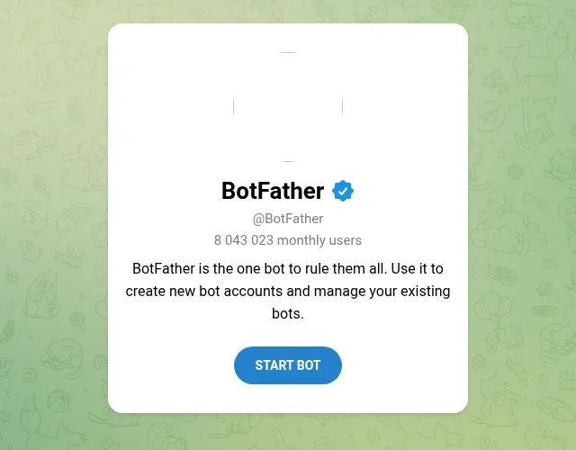

Бот для заявок с сайта Анжелы
permanentbogatyryova.ru · 5 шагов, около 5 минут · нужен только Telegram на телефоне или компьютере
Откройте @BotFather
Это официальный бот Telegram, через него создаются все боты. Галочка у имени – проверенный аккаунт.

Отправьте команду /newbot и дайте имя
BotFather задаст два вопроса. Первый – как бот будет называться в списке чатов. Второй – адрес: латиницей, без пробелов, в конце обязательно bot.
Схема переписки. Тексты BotFather приходят по-английски – это нормально.
AngelaPMU_zayavki2_bot.Скопируйте токен
В ответ BotFather пришлёт сообщение «Done! Congratulations…». В нём – длинный ключ после строки «Use this token to access the HTTP API». Это и есть токен.
Схема. Нажмите на токен – Telegram скопирует его.
/revoke выдаст новый.Анжела нажимает «Старт» в новом боте
Бот не может написать человеку первым. Поэтому Анжела один раз открывает ссылку на бота (она в сообщении BotFather: t.me/имя_бота) и нажимает «Старт». Больше ничего делать не нужно – можно сразу закрыть.
Хотите получать копии заявок сами – тоже нажмите «Старт» в этом боте со своего Telegram.
Пришлите Claude
- Токен из шага 3.
- Адрес бота – например,
@AngelaPMU_zayavki_bot. - Словами: «Анжела нажала Старт» (и «я тоже», если нужны копии).
Дальше всё делает Claude: находит чат Анжелы, прописывает бота на сервере сайта и отправляет ей проверочное сообщение «Бот заявок подключён». Пришло сообщение – значит, работает. Номер её чата и токен никому, кроме сервера сайта, не передаются.
Пример. Если человек оставил телефон – вместо ника будет номер.